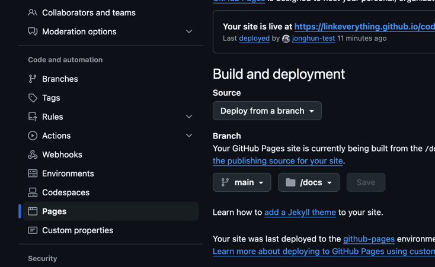

This codelab describe the process that making codelab page in Github pages.
In local machine, brew should be installed.
Install go:
brew install go
Add go binary to PATH:
echo 'export PATH=$PATH:~/go/bin' >> ~/.zshrc
source ~/.zshrc
Then , install claat:
go install github.com/googlecodelabs/tools/claat@latest
Make a markdown file(sample.md) like:
summary: Title of the Codelab
id: codelab-id
categories: Web, Beginner
status: Published
# Title of the Codelab
## Introduction
Brief introduction of the blog/tutorial.
## Step 1: Do Something
Instructions for step 1.
## Step 2: Do Something Else
Instructions for step 2.
In the same directory with markdown file:
claat export sample.md
claat create a codelab-id directory in the same path. (id based directory.)
Copy the codelab-id directory to the github repo's docs folder.
Then, in the settings in the respository, enable pages as below:
